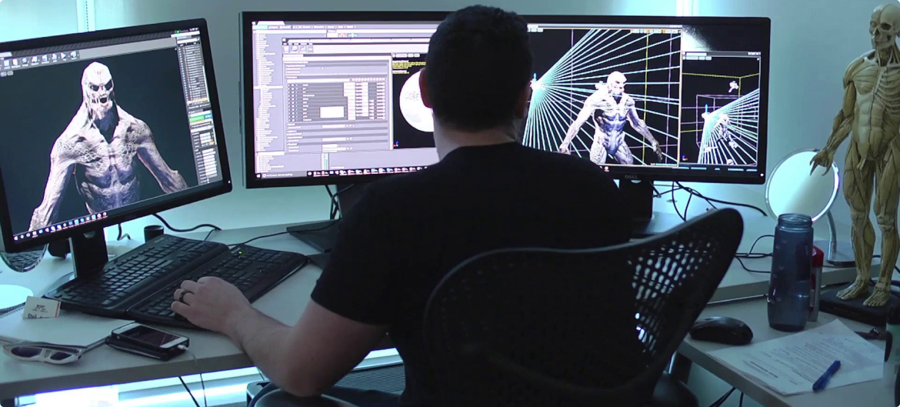
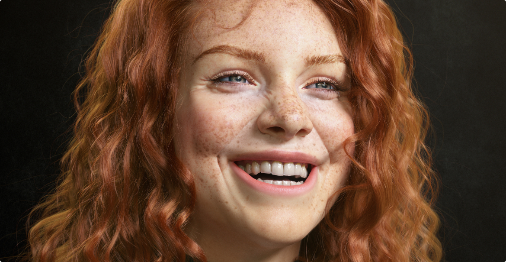

Профессия
Если не вдаваться в тонкости, 3d-шник (3d-художник) – это человек, который занимается созданием моделей и текстур на заказ. Моделлеру дают фото или рисунок и просят сделать также, но в 3d-формате. Конечная работа должна соответствовать заданным требованиям клиента.
При этом 3d-моделлер, получив знания по данной специальности, вполне может переключится на любое смежное направление. Он настолько глубоко знает компьютерную графику, что будет в состоянии уйти, например, в рекламный дизайн. Постепенно специфику 3d-работы осваивают дизайнеры и художники, ведь дело вполне прибыльное.
Что должен уметь специалист
Опытный специалист ценится на вес золота, ведь он может создать что угодно.
Что нужно уметь 3d-моделлеру:
- Работать со сложными техническими программами (например, 3ds Max, Autocad, Adobe Photoshop, CorelDRAW, Adobe InDesign, zBrush), постоянно оттачивая свое мастерство.
- Дополнительно, если вы хотите оживлять персонажей, нужно понимать основы анатомии и биомеханики. Иначе объект будет двигаться нереалистично.
- Нужно уметь более-менее нормально рисовать от руки. Если рисование – это совсем не ваше, то и соваться в такую профессию не стоит.
- У человека должна быть внимательность к деталям – ржавчина на автомобиле или скол на камне создают ощущение реалистичности объекта. Эти мелочи нужно уметь видеть в реальной жизни и переносить в проект.
Данная профессия подойдет для усидчивых людей, готовых часами разбираться, как работает та или иная программа. 3d-моделирование требует большой внимательности к деталям, скрупулезности и даже некоторой педантичности.
Многие уверены, что моделирование – это удел художников и дизайнеров. На практике многие успешные моделлеры не имеют художественного образования. Более того, они самоучки – благо, информации в интернете сейчас с лихвой. Конечно, понимание основ композиции, компоновки тела и постановки света дает преимущество, но вполне реально освоить это направление без специальной подготовки.
Разные виды моделирования вполне могут пересекаться. Представьте, что в игре нужно создать ландшафт или интерьер помещения, тут-то и пригодятся навыки 3d-дизайна. Анимация же вообще используется практически везде – в рекламе, фильмах, видеороликах и т.д. Конечно, специалист может сконцентрироваться на одном направлении, но на практике заказчики ценят именно универсалов – людей, готовых взяться хоть за дизайн-проект дома, хоть за прорисовку персонажа.
Что именно делает 3d-моделлер, приведем несколько примеров:
- Например, требуется сделать 3d-дизайн интерьера будущего магазина или кафе. Специалист рисует обстановку в специальной программе по данным образцам, затем представляет заказчику готовый проект. Аналогичным образом возможно создавать интерьер и в виртуальной реальности – клиент надевает очки и может детально рассмотреть, как будет выглядеть будущее помещение.
- Создает анимацию. В таком случае у специалиста уже есть готовый персонаж, остается сделать для него систему костей и мышц (по аналогии с телом человека или животного, чтобы движения были реалистичными), продумать их динамическое поведение, управляющие элементы. Затем созданный объект можно поместить в игру или мультфильм.
- Делает визуальные эффекты, используемые в частности в кино: например, наложение дождя или снега, добавление массовки в кадр. Также используется motion capture – когда на теле реального актера закрепляются датчики, а затем его движения воссоздаются в анимации персонажа. Это позволяет сделать максимально похожим на реального.
- Геймдизайн – это создание персонажей и предметов в игре. Здесь используются 3d-моделирование и анимация, применяемые и в приведенных выше примерах.
- 3d-печать. Сначала объект создается на компьютере, а затем отправляется на печать через специальный принтер. Можно использовать разные материалы в зависимости от печатающего устройства: от пластика до шоколада. Печатаются запчасти для машин, фигурки, протезы, искусственные органы и даже целые дома.
- 3d-объекты также используются в веб-дизайне. Например, на сайте ресторана необходимо сделать трехмерные блюда, и этим занимаются моделлеры.
- Виртуальная и дополненная реальность – близкие к игровому дизайну направления. Перед специалистом ставится задача создать мир и персонажей игры, дизайн будущего дома.
Как видим, разные виды моделирования вполне могут пересекаться. Представьте, что в игре нужно создать ландшафт или интерьер помещения, тут-то и пригодятся навыки 3d-дизайна. Анимация же вообще используется практически везде – в рекламе, фильмах, видеороликах и т.д. Конечно, специалист может сконцентрироваться на одном направлении, но на практике заказчики ценят именно универсалов – людей, готовых взяться хоть за дизайн-проект дома, хоть за прорисовку персонажа.
Плюсы и минусы профессии
К плюсам профессии 3d-моделлера можем отнести:
- Это очень перспективно. Рынок 3d-моделирования в нашей стране только формируется, в дальнейшем спрос на таких специалистов будет огромным – работы точно хватит на всех моделлеров(но не везде).
- Возможность отлично зарабатывать. Причем вам могут предложить работу не только в России, но и за рубежом, а там специалистам высокого уровня платят куда больше, чем у нас.
- Удаленная работа в свободном графике – не нужно ездить в офис и просиживать штаны от звонка до звонка. История о работе под пальмами на море вполне может быть про 3d-дизайнеров и аниматоров, ведь за один выполненный объект они порой получают месячную зарплату среднестатистического россиянина.
- У человека должна быть внимательность к деталям – ржавчина на автомобиле или скол на камне создают ощущение реалистичности объекта. Эти мелочи нужно уметь видеть в реальной жизни и переносить в проект.
- Если вам близка анимация или видеоигры, это отличный вариант заработка на любимом деле.
Есть и недостатки, о которых тоже нужно упомянуть:
- Для того, чтобы стать специалистом в трехмерной графике, мало будет потратить несколько месяцев на обучение. Профессионализм приходит только с практикой, а на ее наработку может потребоваться несколько лет.
- 3d-моделирование – это не только творчество, но и технический навык. На то, чтобы нарисовать текстуру, уходит несколько часов, а то и дней. Работа может быть однообразной и монотонной, что для некоторых людей – настоящая пытка.
Прошли те времена, когда крутые специальности были привилегией Москвы и крупных городов – интернет стирает границы. Освоить востребованную профессию и найти работу в топовом проекте теперь может любой человек.